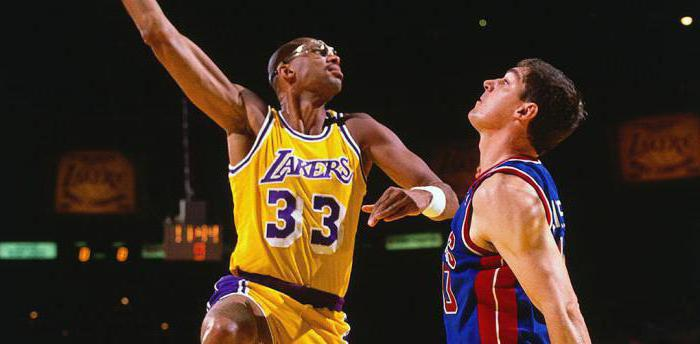

Michael Jordan:
Michael Jordan is a former professional American basketball player, Olympic athlete, businessperson and actor. Considered one of the best
basketball players ever, he dominated the sport from the mid-1980s to the late 1990s. Jordan led the Chicago Bulls to six National Basketball
Association championships and earned the NBA's Most Valuable Player Award five times. With five regular-season MVPs and three All-Star MVPs,
Jordan became the most decorated player in the NBA. Jordan enrolled at the University of North Carolina at Chapel Hill in 1981 and soon
became an important member of the school's basketball team. UNC won the NCAA Division I championship in 1982, with Jordan scoring the
inal basket needed to defeat Georgetown University. He was also singled out as the NCAA College Player of the Year in 1983 and in 1984.
Jordan left college after his junior year to join the NBA in 1984. In 1985, Jordan finished his bachelor's degree in geography as he
continued to play basketball professionally. Jordan began his professional basketball career when he was drafted by the Chicago Bulls
in 1984. He was the third overall pick, behind Hakeem Olajuwon, who was selected first by the Houston Rockets, and Sam Bowie, taken
by the Portland Trail Blazers; the draft also featured legendary players John Stockton and Charles Barkley.

Kareem Abdul-Jabbar:
Kareem Abdul-Jabbar (born Ferdinand Lewis Alcindor Jr.; April 16, 1947) is an American former professional basketball player who played 20 seasons
in the National Basketball Association (NBA) for the Milwaukee Bucks and the Los Angeles Lakers. During his career as a center, Abdul-Jabbar was
a record six-time NBA Most Valuable Player (MVP), a record 19-time NBA All-Star, a 15-time All-NBA selection, and an 11-time NBA All-Defensive
Team member. A member of six NBA championship teams as a player and two more as an assistant coach, Abdul-Jabbar twice was voted NBA Finals MVP.
In 1996, he was honored as one of the 50 Greatest Players in NBA History. NBA coach Pat Riley and players Isiah Thomas and Julius Erving have
called him the greatest basketball player of all time. After winning 71 consecutive basketball games on his high school team in New York City,
Alcindor was recruited by Jerry Norman, the assistant coach of UCLA, where he played for coach John Wooden[7] on three consecutive national
championship teams and was a record three-time MVP of the NCAA Tournament. Drafted with the first overall pick by the one-season-old Bucks
franchise in the 1969 NBA draft, Alcindor spent six seasons in Milwaukee. After leading the Bucks to its first NBA championship at age 24
in 1971, he took the Muslim name Kareem Abdul-Jabbar. Using his trademark "skyhook" shot, he established himself as one of the league's top
scorers.

LeBron James:
LeBron Raymone James Sr. (/ləˈbrɒn/; born December 30, 1984) is an American professional basketball player for the Los Angeles Lakers of the
National Basketball Association (NBA). Widely considered one of the best NBA players in history, James is frequently compared to Michael Jordan
in debates over the greatest basketball player ever. Playing for the Cleveland Cavaliers, Miami Heat, and Los Angeles Lakers, James is the
only player to have won NBA championships with three franchises as Finals MVP. He has competed in ten NBA Finals, eight of them consecutively
with the Heat and Cavaliers from 2011 through 2018. His accomplishments include four NBA championships, four NBA Most Valuable Player (MVP)
Awards, four Finals MVP Awards, and two Olympic gold medals. During his 17-year career, James holds the record for all-time playoffs points,
is third in all-time points, and eighth in career assists. James has been selected to the All-NBA First Team a record 13 times, made the All
-Defensive First Team five times, and has been named an All-Star 17 times, including three All-Star MVP selections. James played basketball
for St. Vincent–St. Mary High School in his hometown of Akron, Ohio, where he was heavily touted by the national media as a future NBA
superstar.
Magic Johnson:
Earvin "Magic" Johnson Jr. (born August 14, 1959) is an American former professional basketball player and former president of basketball operations
of the Los Angeles Lakers of the National Basketball Association (NBA). Often regarded as the best point guard of all time, Johnson played
13 seasons for the Lakers and was honored as one of the 50 Greatest Players in NBA History in 1996. After winning championships in high school
and college, Johnson was selected first overall in the 1979 NBA draft by the Lakers. He won a championship and an NBA Finals Most Valuable Player
Award in his rookie season, and won four more championships with the Lakers during the 1980s. Johnson retired abruptly in 1991 after announcing
that he had contracted HIV, but returned to play in the 1992 All-Star Game, winning the All-Star MVP Award. After protests from his fellow
players, he retired again for four years, but returned in 1996, at age 36, to play 32 games for the Lakers before retiring for the third and
final time. Johnson's career achievements include three NBA MVP Awards, nine NBA Finals appearances, twelve All-Star games, and ten All-NBA
First and Second Team nominations.
Wilt Chamberlain:
Wilton Norman Chamberlain (/ˈtʃeɪmbərlɪn/; August 21, 1936 – October 12, 1999) was an American professional basketball player who played as a
center, and is widely regarded as one of the greatest players in the sport's history.
He played for the Philadelphia/San Francisco Warriors, the Philadelphia 76ers, and the Los Angeles Lakers of the National Basketball
Association (NBA). He played for the University of Kansas and for the Harlem Globetrotters before playing in the NBA. Chamberlain stood
7 ft 1 in (2.16 m) tall, and weighed 250 pounds (110 kg) as a rookie before gaining up to 275 pounds (125 kg) and later to over 300 pounds
(140 kg) with the Lakers. Chamberlain holds numerous NBA regular season records in scoring, rebounding, and durability categories. He is the
only player to score 100 points in a single NBA game or average more than 40 and 50 points in a season. He won seven scoring, eleven rebounding
, nine durability, and nine field goal percentage titles, and led the league in assists once. Chamberlain is the only player in NBA history to
average at least 30 points and 20 rebounds per game in a season, which he accomplished seven times.
Larry Bird:
Larry Joe Bird (born December 7, 1956) is an American former professional basketball player, coach and executive in the National Basketball
Association (NBA). Nicknamed "the Hick from French Lick" and "Larry Legend", Bird is widely regarded as one of the greatest basketball players
of all time. Growing up in French Lick, Indiana, he was a local basketball phenom. Highly recruited, he initially signed to play for coach Bobby
Knight of the Indiana Hoosiers, but dropped out after one month and returned to French Lick to attend a local community college. The next year
he attended the smaller Indiana State University, playing ultimately for three years for the Sycamores. Drafted by the Boston Celtics with
the sixth overall pick in the 1978 NBA draft, after his second year at Indiana State, Bird elected to stay in college and play one more
season. It was a fortuitous decision: He led them to an undefeated regular season in 1978-1979, including a memorable national championship
game matchup against Michigan State, a team that featured Magic Johnson, beginning a career-long rivalry that the two shared for more than
a decade. Bird entered the NBA for the 1979-1980 season, where he made an immediate impact, starting at power forward and leading
the Celtics to a 32-win improvement over the previous season before being eliminated from the playoffs in the Conference Finals.
Tim Duncan:
Timothy Theodore Duncan (born April 25, 1976)[1] is an American former professional basketball player and coach. Nicknamed "the Big Fundamental",
he is widely regarded as the greatest power forward of all time and one of the greatest players in NBA history.He spent his entire 19-year playing
career with the San Antonio Spurs. Duncan started out as an aspiring swimmer and only began playing basketball in ninth grade, when Hurricane
Hugo destroyed the only available Olympic-sized pool in his homeland of Saint Croix, U.S. Virgin Islands. In high school, he played basketball
for St. Dunstan's Episcopal. In college, Duncan played for the Wake Forest Demon Deacons, and in his senior year, he received the John Wooden
Award and was named the Naismith College Player of the Year and the USBWA College Player of the Year. After graduating from college,
Duncan was the NBA Rookie of the Year after being selected by San Antonio with the first overall pick in the 1997 NBA draft. He primarily
played the power forward position and also played center throughout his career.
Shaquille O'Neal:
Shaquille Rashaun O'Neal (/ʃəˈkiːl/ shə-KEEL; /ʃæk/ SHAK; born March 6, 1972) is an American former professional basketball player who is a sports
analyst on the television program Inside the NBA.[1] O'Neal is regarded as one of the greatest basketball players and centers of all time.
He was a 7-foot-1-inch (2.16 m) and 325-pound (147 kg) center who played for six teams over his 19-year career in the National Basketball
Association (NBA) and is a four-time NBA champion. After playing college basketball for the LSU Tigers, O'Neal was drafted by the Orlando
Magic with the first overall pick in the 1992 NBA draft. He quickly became one of the best centers in the league, winning Rookie of the Year
in 1992–93 and leading his team to the 1995 NBA Finals. After four years with the Magic, O'Neal signed as a free agent with the Los Angeles
Lakers. They won three consecutive championships in 2000, 2001, and 2002. Amid tension between O'Neal and Kobe Bryant, O'Neal was traded to
the Miami Heat in 2004, and his fourth NBA championship followed in 2006. Midway through the 2007–2008 season he was traded to the Phoenix
Suns.
Hakeem Olajuwon:
Hakeem Abdul Olajuwon (/əˈlaɪʒuɒn/; Yoruba: [olaɟuwɔ̃]; born January 21, 1963), nicknamed "the Dream," is a Nigerian-American former professional
basketball player. From 1984 to 2002, he played the center position in the National Basketball Association (NBA) for the Houston Rockets and
the Toronto Raptors. He led the Rockets to back-to-back NBA championships in 1994 and 1995. In 2008, he was inducted into the Naismith Memorial
Basketball Hall of Fame, and in 2016, he was inducted into the FIBA Hall of Fame. Born in Lagos, Nigeria, Olajuwon traveled from his home country
to play for the University of Houston under head coach Guy Lewis. His college career for the Cougars included three trips to the Final Four.
Olajuwon was drafted by the Houston Rockets with the first overall selection of the 1984 NBA draft, a draft that included Michael Jordan,
Charles Barkley, and John Stockton. He combined with the 7 feet 4 inches (224 cm) Ralph Sampson to form a duo dubbed the "Twin Towers".
The two led the Rockets to the 1986 NBA Finals, where they lost in six games to the Boston Celtics.